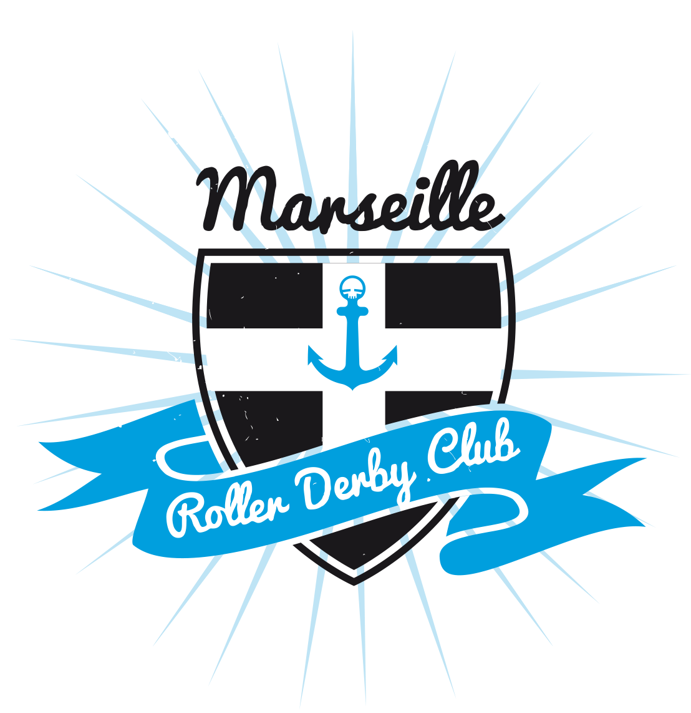

<!-- header only if not login page -->
<ng-container *ngIf="router.url.split('/')[1] != 'auth'">
  <header>
    
    <naviguation [menuColor]="menuColor"></naviguation>
  </header>
  <!-- socials icons -->
  <ul>
    <li>
      <a
        href="https://twitter.com/MarseilleRoller"
        [ngStyle]="{ color: socialsColor }"
        ><fa-icon [icon]="twitter"></fa-icon
      ></a>
    </li>
    <li>
      <a
        href="https://www.facebook.com/marseillerollerderby/"
        [ngStyle]="{ color: socialsColor }"
        ><fa-icon [icon]="facebook"></fa-icon
      ></a>
    </li>
    <li>
      <a
        href="https://www.instagram.com/marseillerollerderbyclub/"
        [ngStyle]="{ color: socialsColor }"
        ><fa-icon [icon]="instagram"></fa-icon
      ></a>
    </li>
  </ul>
</ng-container>
<!--main content-->
<nb-layout>
  <nb-layout-column>
    <router-outlet></router-outlet>
  </nb-layout-column>
</nb-layout>
